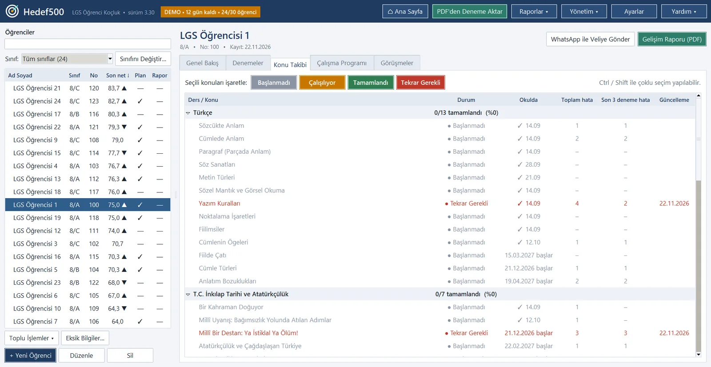

LGS deneme sonucundan haftalık programa, tek programda.
Hedef500, 8. sınıf öğrencilerini LGS'ye hazırlayan öğretmenler ve eğitim koçları için bir Windows programı. Yayınevinin sonuç PDF'ini verirsiniz; konu eksiklerini, öğrenciye özel haftalık çalışma programını ve veliye gidecek raporu program hazırlar.
Windows 10 ve 11 · 15 gün, 30 öğrenciye kadar ücretsiz · Yönetici izni gerekmez
Bir haftanın akışı
Deneme günü başlayan dört adım. Her adım programda tek bir düğmeyle yapılır; Ana Sayfa sıradaki adımı gösterir.
-
Deneme sonucunu aktarın
Yayınevinin karnesini ya da kurum listesini PDF olarak seçin. Bütün sınıfın netleri, ders ders doğru-yanlışları ve yanlış yapılan kazanımlar tek seferde işlenir. Sistemde olmayan öğrenciler eklenir; sınıfı yazılmamış olanlar ayrı tutulur.
Öğrenci listesi Excel'den de alınabilir; program boş bir şablon hazırlar.

-
Eksikleri görün
Her öğrencinin hangi konuda, kaç denemede hata yaptığı listelenir; konu durumları kendiliğinden güncellenir. Öğrenci listesinde son net ve bir önceki denemeye göre ▲ ▼ değişim görünür; 5 ya da daha çok net düşen öğrenci kırmızı yazılır.
Okulda henüz işlenmemiş konular önceliklere girmez; işlenen konular MEB yıllık planına göre kendiliğinden izlenir.

-
Haftalık programı hazırlayın
Program, öğrencinin öncelikli konularından o haftanın çalışma planını çıkarır: konu çalışması, soru çözümü, deneme analizi ve günlük rutinler. Soru sayısı öğrencinin her dersteki seviyesine göre ayarlanır; neti düşük derslerde video konu anlatımı ve video soru çözümü eklenir. Tek öğrenciye ya da bütün sınıfa bir kerede hazırlanır.
İsterseniz programı sürükle-bırakla kendiniz kurarsınız: önerilen konuları havuzdan günlere taşırsınız. Haftanın hangi gün başlayacağını öğrenciye göre seçersiniz. Yatay haftalık çizelge her dersi her gün aynı satırda, tek sayfada gösterir; programa uyum oranı raporlara yansır.

-
Veliye gönderin
Gelişim raporu ve haftalık program, yazdırmak için A4 ve telefonda yakınlaştırmadan okunacak dar sayfa olarak hazırlanır. WhatsApp'ta velinin sohbeti hazır mesajla açılır; raporu ekleyip siz gönderirsiniz.
Program hiçbir mesajı kendi başına göndermez; son kontrol her zaman sizdedir.

Sınıfın tamamı için
- Sınıf raporu
- Sınıfta en çok öğrencinin eksik olduğu konular, her öğrencinin son neti, puanı, hedefi ve programa uyumu.
- Sınıf net listesi
- Ekrandaki öğrenci listesinin PDF'i; her sınıf ayrı sayfada, sınıf öğretmenine verilmeye hazır.
- Sınıfları karşılaştırma
- Aynı deneme üzerinden sınıfların ders ortalamaları ve hangi konuda hangi sınıfa etüt gerektiği.
- Konu etüt grupları
- Aynı konuda zorlanan öğrenciler bir listede; etüt görevi hepsinin programına tek seferde eklenir.
- Deneme katılımı
- Son denemelere hangi öğrencinin girmediği, sınıf sınıf.
- Görüşme notları
- Öğrenciyle yapılan görüşmeler, alınan kararlar ve sonraki görüşme tarihi; zamanı gelenler Ana Sayfa'da hatırlatılır.
Öğrenci bilgisi bilgisayarınızdan çıkmaz.
Hedef500 bir internet hizmeti değil, bilgisayarınızda çalışan bir program. Öğrencilerin adları, netleri ve velilerin telefonları yalnızca sizin bilgisayarınızda saklanır.
- Hesap ve şifre yok. Programı açar, kullanırsınız; hiçbir sunucuya kayıt olmazsınız.
- Öğrenci verisi gönderilmez. Program internete yalnızca yeni sürüm ve lisans bilgisini sormak için çıkar.
- Her kapanışta yedek. Veriler sıkıştırılmış olarak yedeklenir; isterseniz kendi Google Drive hesabınıza da kopyalanır.
- İnternet olmadan da çalışır. Okul ağı engelli olsa da program açılır ve kullanılır.
Fiyatlar
Önce ücretsiz deneyin. Lisans yıllıktır ve tek bir bilgisayara bağlıdır; bilgisayar değiştirdiğinizde lisansınız yeni bilgisayara taşınır.
Demo
İlk kullanımdan itibaren 15 gün, 30 öğrenciye kadar bütün özellikler. İndirip açmanız yeterli.
Kurum tanıtım lisansı
Okullar programı bütün sınıflarıyla, öğrenci sınırı olmadan 30 gün inceleyebilir. Programdaki Lisans penceresinden istenir.
| Paket | Öğrenci sayısı | Yıllık fiyat | Öğrenci başına |
|---|---|---|---|
| Bireysel Koç | 10 öğrenciye kadar | 3.000 TL | 300 TL yılda · ayda 25 TL |
| 50 öğrenci | 50 öğrenciye kadar | 5.000 TL | 100 TL yılda · ayda ≈8 TL |
| 150 öğrenci | 150 öğrenciye kadar | 10.000 TL | 67 TL yılda · ayda ≈6 TL |
| 300 öğrenci | 300 öğrenciye kadar | 15.000 TL | 50 TL yılda · ayda ≈4 TL |
| Sınırsız | Öğrenci sınırı yok | 20.000 TL | 40 TL yılda, 500 öğrencide · daha çok öğrencide daha az |
Öğrenci başına tutar, paketin öğrenci sayısı dolu kullanıldığında yıllık fiyatın öğrenci sayısına bölünmesiyle hesaplanmıştır; aylık tutar 12 aya bölünerek yuvarlanmıştır. Lisans almak için programda üst çubuktaki lisans etiketine tıklayıp talep gönderin; lisans dosyanız e-postanıza gelir. Demo ya da lisans süresi bittiğinde program salt okuma moduna geçer, hiçbir veri silinmez.
İndirin
Programı indirip çift tıklayın. İlk açılışta kendini bilgisayarınıza yerleştirir: kendi klasörüne kopyalanır, Masaüstüne ve Başlat menüsüne Hedef500 kısayolu eklenir, indirdiğiniz dosya Geri Dönüşüm Kutusu'na taşınır. Kurulum sihirbazı ve yönetici izni gerekmez. Yeni sürümler program içinden tek tıkla kurulur.
Windows ilk açılışta “Windows bilgisayarınızı korudu” uyarısı gösterebilir. Bu, yeni ve henüz yaygın olmayan programlarda çıkan genel bir uyarıdır: Ek bilgi → Yine de çalıştır deyin.
Sık sorulan sorular
Hangi yayınevlerinin deneme sonuçlarını okuyor?
Pek çok yayınevinin öğrenci karnesi ve kurum listesi PDF'leri okunur. Okunamayan bir belge olursa program, öğrenci ve okul adlarını gizleyerek belgenin biçimini bildirmenizi sağlar; o yayın sonraki sürümlerde tanınır.
Mac'te ya da telefonda çalışır mı?
Program yalnızca Windows'ta çalışır. Hazırladığı raporlar ve haftalık programlar ise telefonda yakınlaştırmadan okunacak biçimde de üretilir; veliler ve öğrenciler telefondan okur.
Okulda internet engelliyse ne olur?
Program internetsiz de çalışır. Yeni sürümleri ve lisans bilgisini okul ağı engelliyse yedek bir adresten almaya çalışır; olmazsa programı evde açtığınızda güncellenir.
Verilerimi başka bir bilgisayara nasıl taşırım?
Ayarlar'da Şimdi Yedekle ile tek bir yedek dosyası alın, yeni bilgisayarda Yedekten Geri Yükle ile açın. Lisansınızı yeni bilgisayara taşımak için Lisans penceresinden “Bilgisayar değişikliği” talebi gönderin.
Demo bittiğinde verilerim silinir mi?
Hayır. Program salt okuma moduna geçer: öğrencileri, denemeleri ve raporları görmeye, yedek almaya devam edersiniz. Lisansı etkinleştirdiğiniz anda kaldığınız yerden sürer.
Puanlar resmî LGS puanı mı?
Deneme belgesinde yayınevinin puanı varsa o gösterilir. Yoksa program netlerden tahmini bir puan hesaplar ve bunu “≈” işaretiyle belirtir. Gelişimi izlemede net değişimi daha güvenilir ölçüdür.
Soru, tanıtım ya da teklif için yazın
Formu doldurun, e-postayla dönüş yapılır. Okullar programı tanıtım lisansıyla 30 gün inceleyebilir; sınıf sayısına göre teklif de istenebilir.
Lütfen bu forma öğrencilere ait bilgi (ad, numara, not) yazmayın.
Mesajınız Google Formlar aracılığıyla iletilir; yalnızca bu talebe yanıt vermek için kullanılır.